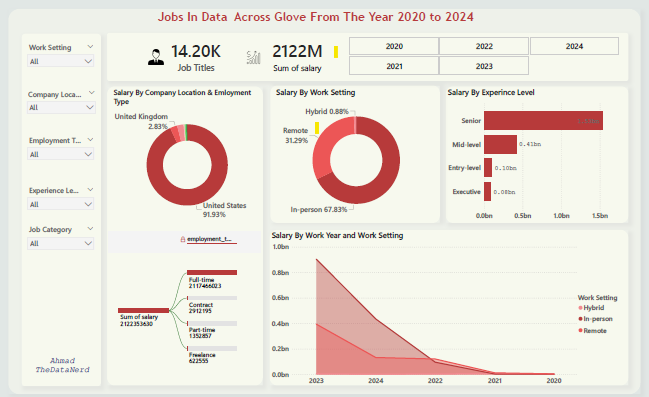

Enhancing data quality by clean and standardizing data to improve accuracy
, consistency and reliabilty for informed desicion making. Data cleaning task include
handling missing values using CASE statements and COALESCE Functions, standerdize job titles and departments using
REGEXP and REPLACE functions, remove duplicates using DISTINCT and ROW_NUMBER() functions, Validated date formats using STR_TO_DATE functions and
Normalized salary data using aggregation and grouping.
In this project I explore the Leading jobs in data across the globe
from the year 2020 to 2024. Data jobs has unprecedent impact in the
world and has keep on taking impact year by year in world’s companies.
The dataset contains figures such as work year and salary organized by experience level,
job title, employee residence, work setting, company location and job category.
The aim was to drive out an insight that will provide the user a simple way to understand how salary is
distributed according to experience level, employee residence,
work setting, company location, work year and job category.

This data was gotten from a Phone Network Company. i showcase my Python skills by cleaning the data using
pandas to show my Proficiency in the tool. Data Cleaning techniques incudes handling missing values,
removing duplicates, handling outliesr and data transformation

Explore Data Visualization gallery across Industries, Finance, Entertainment and Enviroment.
Showcasing interactive and dynamic Projects
using Power Bi. The Visualizations include interactive dashboards: real time data exploration,
Geospatial visualizations: location-based insights, Time-Series analysis: Trends and patterns.
This Project analyze the "LIBERTY GUEST IN RESERVATION DATASET (2017 - 2018)"
to gain insights into guest preferences,
booking trends, and other key factors that impact the hotel's operations.
i use SQL to query and analyze the data, as well as answer specific questions about the dataset.
The analysis explore diffrent bookings types, market segment, highest and lowest lead time for reservation
and reservation made in each month of the year.
The findings aim to provide valuable insights for the Hotel policymakers and
stakeholders by showcasing my data analysis and insight generation